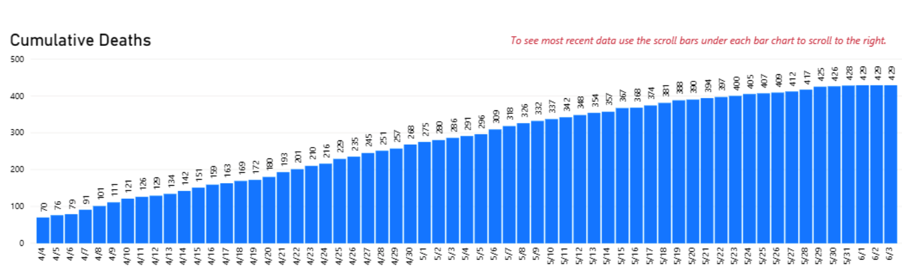

Update NV historical time series for cumulative deaths
State or US: Nevada
Describe the problem This GitHub issue is filed to request updating the time series for cumulative deaths.
Context: NV publishes Daily/Weekly Situation Reports which include time series charts of tests performed, cases, cumulative deaths and additional data.
Observation: From the June 4 report, the time series for cumulative deaths shows a higher count than what is currently reported from CTP:
Examples:
| Date | NV Situation Report | CTP |
|---|---|---|
| … | ||
| 5/31 | 428 | 417 |
| 5/30 | 426 | 417 |
| 5/29 | 425 | 410 |
| … |
Link to data source
- Daily/Weekly Situation Reports: https://nvhealthresponse.nv.gov/news-resources/daily-situation-reports/
- June 4 Situation Report: https://nvhealthresponse.nv.gov/wp-content/uploads/2020/06/06.4.20-Daily-SitRep-final.pdf
Nevada looks like they revise historicals to account for reporting lags and such; the curves for cases and deaths on their dashboard (you can right click and view as table) don’t match ours until the current day. (edit: the total tests curve on the other hand does match ours, just offset by one day)
Small adjustment to what I said: they only revise historical deaths.
Cases and total tests are mostly offset by one day because of when we update. There are some small differences in cases, especially back in March, but I don’t think correcting minor errors is worth the “bubble” (one day with double cases) it will introduce, because it corrects the off-by-one effect for the data that exists only to have future data entry shifts reintroduce it.
So: I’ve updated deaths all the way back and the confirmed deaths column. These were fairly off from what we had because of the revisions. For example, in between 19 June and today, they added a new death back in early May! Data and analysis here: https://docs.google.com/spreadsheets/d/10jJ5Fq9M6CamVAELZK2dfendTMYfJy5bEZMFdEsuBf0/edit#gid=0
This looks like a screenshot from the dashboard (page5). At least there’s no need to copy numbers from PDFs. Here’s the CSV version, that I took from the dashboard nv_deaths_cumsum.zip